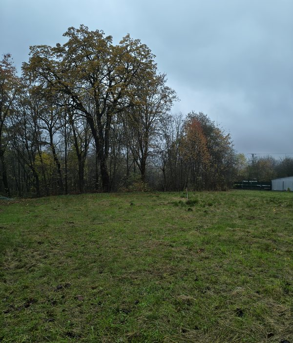

Jurków, Szyrszenie · 1826 · z mojej książki „Ród Podgórnich z Jurkowa”
Kaplica na Szyrszeniu
Na Szyrszeniu w Jurkowie Dolnym, naprzeciw domu nr 5, stoi murowana kaplica Świętej Rodziny z 1826 roku. W maju 2026 roku parafia świętowała jej dwusetlecie. Kto ją zbudował?
Naprzeciw domu nr 5 w Jurkowie, w którym przez sto czterdzieści pięć lat mieszkali moi przodkowie Podgórni, stoi na Szyrszeniu kaplica Świętej Rodziny. Zbudowano ją w 1826 roku z kamienia, z wieżą od frontu. W ołtarzu wisi obraz Świętej Rodziny. Do dziś w drugi dzień Zielonych Świąt odprawia się tu msza, a w maju sąsiedzi przychodzą na nabożeństwa majowe. 30 maja 2026 roku parafia Dobra świętowała jej dwusetlecie.

Relikwie od biskupa
Rok po budowie, 16 lipca 1827 roku, biskup tarnowski Grzegorz Tomasz Ziegler konsekrował dla kaplicy portatyl, czyli przenośny kamień ołtarzowy z relikwiami świętych Innocentego i Walentego. Na płycie zachował się jego odręczny łaciński napis. Pod nim jest drugi, z 23 sierpnia 1848 roku: biskup Józef Grzegorz Wojtarowicz, wizytując parafię Dobra, ponownie zapieczętował relikwie. Relikwie były kosztowne. Świadczą o zamożności fundatorów albo o kimś, kto umiał je sprowadzić.
Kto ją zbudował
Według miejscowej tradycji, spisanej przez regionalnego historyka, kaplicę wystawił ojciec z rodziny Podgórnich w podzięce Bogu za to, że jeden z jego synów został księdzem. Autorowi nie udało się ustalić, kim był ten ksiądz. Spróbowałem w księgach.
W latach 20. XIX wieku w sąsiednich domach nr 5 i 6 mieszkały trzy rodziny Podgórnich. W domu nr 5 bracia Józef, z żoną Agnieszką z Trzopków, i Melchior, z żoną Anną ze Stysiów. W domu nr 6 Jan z Marianną z Pałków. W 1826 roku synowie żadnego z nich nie mogli być jeszcze księżmi. Mogli nimi być starsi synowie Jana i Katarzyny z domu nr 5: Jan, urodzony w 1784 roku, Szymon w 1789 i Andrzej w 1794. Ich dalszych losów księgi Jurkowa nie notują. Ojciec zmarł jednak w 1810 roku, więc kaplicę musiałby postawić ktoś inny z rodziny. W drukowanych spisach duchowieństwa diecezji tarnowskiej, krakowskiej i przemyskiej z lat 1824–1874 księdza o nazwisku Podgórny nie znalazłem.
Jedno jest pewne. Kaplica powstała w tym samym roku, w którym dzieci z domu nr 5 zaczęły mieć za chrzestnych ludzi z dworu w Dobrej. W maju 1826 roku mojego praprapradziadka Jana Józefa trzymał do chrztu przedstawiciel pana na Dobrej, a w 1831 roku jego młodszego brata sam hrabia Ludwik Małachowski z hrabiną. Opowiada o tym historia „Hrabia przy chrzcielnicy”. Rodzina z własną kaplicą była w okolicy kimś i tak traktował ją dwór.
Z księgi chrztów Jurkowa, 23 maja 1826
Joannes Josephus binominis · Josephus Podgórni · Agnes nata Trzopek · Dominus Joannes Herburt et Magdalena Pasterska · Repraesentans Dominii Dobra, uxor possessoris
Jan Józef, dwojga imion, z domu nr 5; ojciec Józef Podgórni, matka Agnieszka z Trzopków. Chrzestni: pan Jan Herburt (nazwisko odczytane niepewnie), przedstawiciel dominium Dobra, i Magdalena Pasterska, żona posesora.
Jurków, chrzty 1825–1840 · sygn. 4268/3565 · skan 006 · zobacz skan ↗

Ksiądz sto lat później
Ksiądz z rodu jednak był, tyle że sto lat później. Andrzej Podgórni urodził się 19 grudnia 1892 roku w Jurkowie nr 108, w rodzinie Antoniego i Anny z Chalcarzów. W 1919 roku wstąpił do dominikanów i przyjął imię Leon. Święcenia kapłańskie otrzymał w 1925 roku. Przeżył napad na klasztor w Podkamieniu w 1944 roku, a zmarł w Gidlach w 1953 roku. Dom nr 108 to linia Melchiora z domu nr 5, więc ojciec Leon był najpewniej praprawnukiem Jana i Katarzyny, tak jak mój pradziadek Józef. Jego losy opisuje historia „Ojciec Leon z Jurkowa”.
Według przekazów mieszkańców około 50 metrów od miejsca, gdzie stoi kaplica, stała kiedyś karczma, w której w 1735 roku pojmano harnasia Baczyńskiego. Opowiada o tym historia „Ostatnia hulanka harnasia”.
Na ile to pewne
- PewneRok budowy kaplicy, napisy biskupów z 1827 i 1848 roku na płycie portatyla i rodziny Podgórnich w domach nr 5 i 6. Wpisy porównane ze skanami.
- PrawdopodobneŻe ojciec Leon Podgórni pochodził od Melchiora z domu nr 5.
- MożliweTradycja o fundatorze z rodu Podgórnich i o synu księdzu, oraz to, że był nim któryś z synów Jana i Katarzyny.
Czego nie wiemy
- Kto zbudował kaplicę i który z Podgórnich został księdzem. Najwięcej mogą powiedzieć akta wizytacji parafii Dobra z lipca 1827 roku w Archiwum Diecezjalnym w Tarnowie i „Słownik biograficzny kapłanów diecezji tarnowskiej 1786–1985”.
- Dlaczego relikwie świętego Walentego. W domu nr 6 w 1819 roku urodził się Walenty Podgórni, ale to może być przypadek.
Źródła
- Księgi chrztów Jurkowa, sygn. 4268/3560 (skany 058–062) i 4268/3565 (skany 004–016); duplikat chrztów Jurkowa, sygn. 3402/3511 (skan 002); w serwisie Metryki PTG.
- Artykuł o kaplicy na historiadobrej.pl; zdjęcia z jubileuszu w albumie Parafii Dobra; Wikipedia, hasło „Jurków” (za: D. Gacek, „Beskid Wyspowy. Przewodnik”, 2020).
- K. Matyja, artykuł o o. Leonie Podgórnym, Rocznik Przemyski 57 (2021).
- Moja książka „Ród Podgórnich z Jurkowa” (2026), rozdział „Kaplica w Jurkowie Dolnym”.